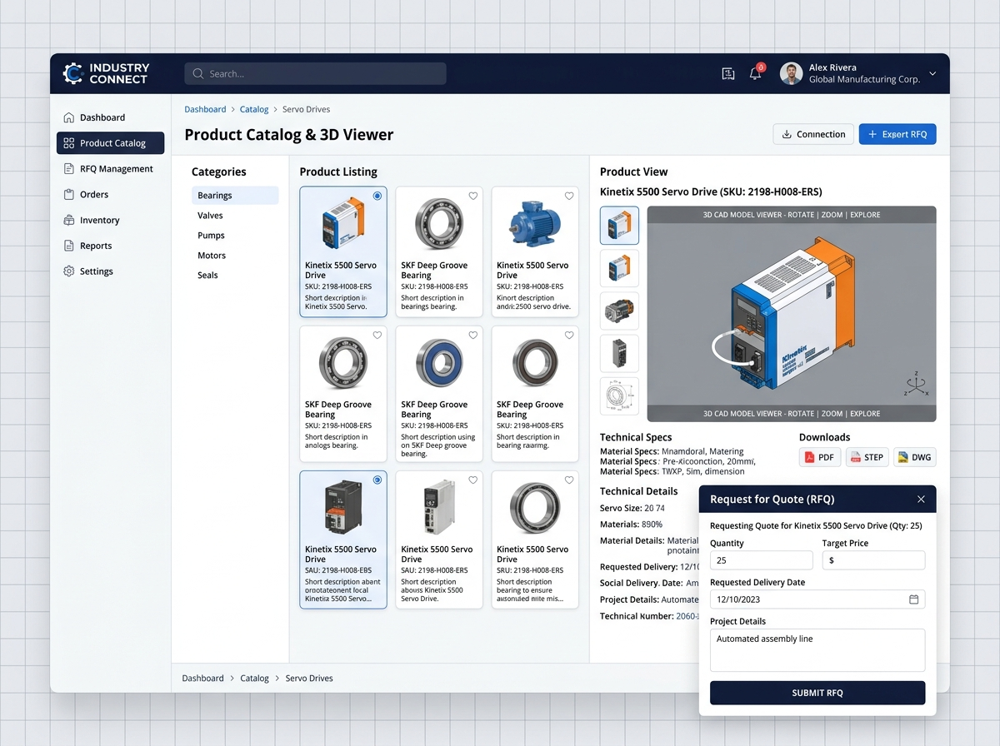

Project case study
Global B2B Manufacturing Portal
An enterprise B2B portal and interactive catalog for medical and industrial manufacturing products, with technical catalog generation and RFQ/DFM workflows.

01 / CASE STUDY
Business context
The portal presents specialized medical and industrial product lines to business buyers through a structured digital catalog and inquiry journey. The project brief describes more than 20 product lines, including medical products associated with ISO 13485.
02 / CASE STUDY
Product catalog and technical documents
An interactive catalog organizes product information for prospective buyers. Python and ReportLab generate multi-page technical PDF catalogs, making detailed product information easier to package and share.
03 / CASE STUDY
RFQ and DFM workflows
The request-for-quotation and design-for-manufacturing workflow supports CAD file uploads, material selection, and regulatory consultation as part of the buyer inquiry process.
04 / CASE STUDY
Delivery architecture
The responsive multi-page site is deployed through Vercel Edge, with Node.js middleware supporting request and delivery behavior. Performance outcomes are not quantified here without independently verified measurements.
Engineering notes
Key considerations
- Presenting multiple product families in a navigable catalog structure.
- Connecting product discovery to technical documentation and quote requests.
- Supporting manufacturing conversations that may require CAD files, material details, and regulatory context.
Technology